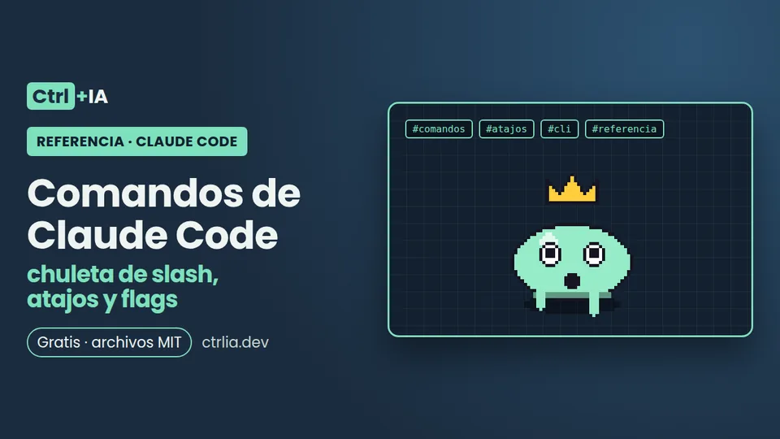
Referencia · Básico · 8 min
Comandos de Claude Code: chuleta de slash, atajos y flags
Chuleta de Claude Code al día: comandos /, atajos de teclado y flags de terminal por grupos, con qué hace cada uno y cuándo usarlo. Lista para copiar.
Todas las recetas, referencias, comparativas, plantillas y checklists de Ctrl+IA, gratis. Filtra por formato o por tema, o busca lo que necesitas.
No hay nada con esa búsqueda. Prueba con otra palabra o quita filtros.

Referencia · Básico · 8 min
Chuleta de Claude Code al día: comandos /, atajos de teclado y flags de terminal por grupos, con qué hace cada uno y cuándo usarlo. Lista para copiar.

Referencia · Intermedio · 10 min
Desde la 2.1.277 Claude Code lee AGENTS.md si no hay CLAUDE.md. Qué lee en cada caso, la trampa de CLAUDE.local.md y un solo archivo para todas tus IAs.
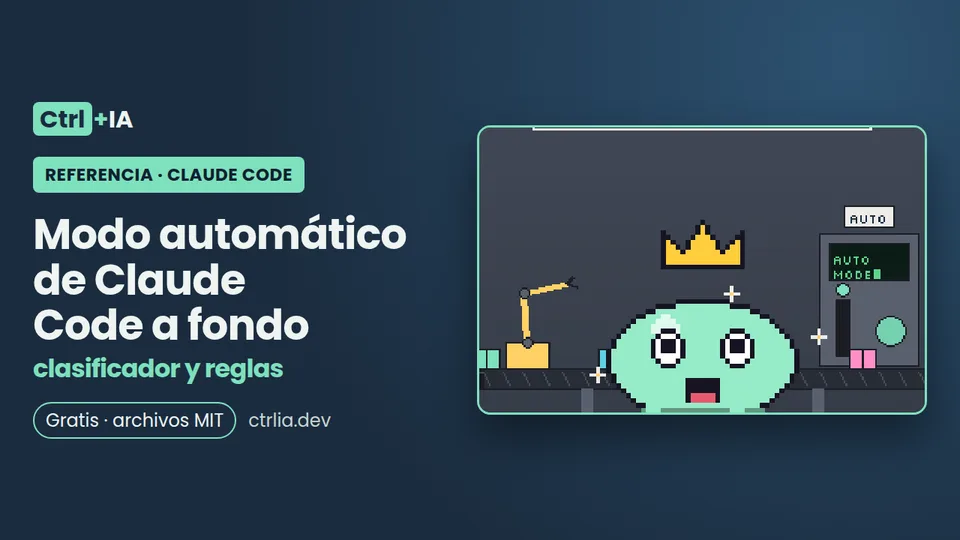
Referencia · Avanzado · 15 min
Cómo decide el modo automático de Claude Code, qué bloquea, cómo enseñarle tu entorno con /auto-mode-setup o autoMode y por qué no olvidar "$defaults".
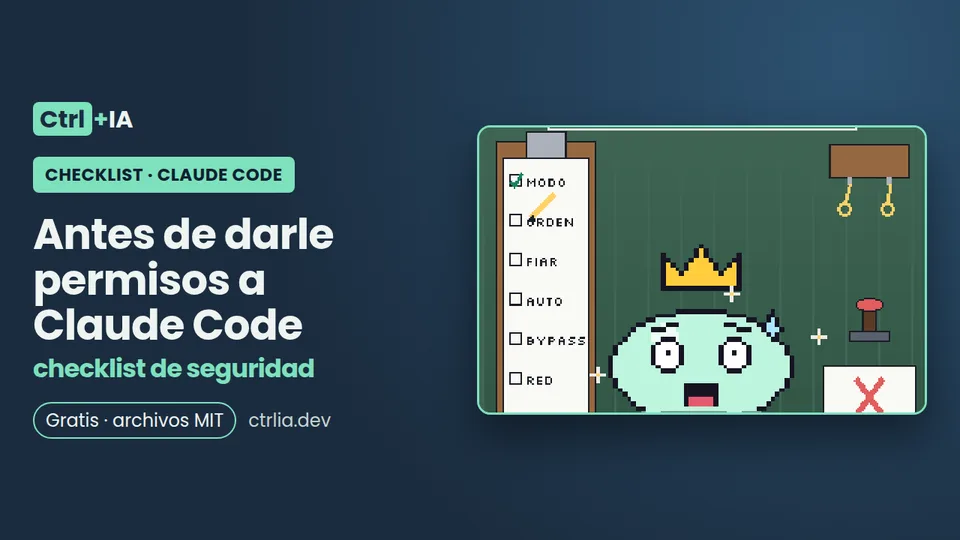
Checklist · Intermedio · 15 min
Diez comprobaciones antes de dar más permisos a Claude Code o abrirlo en un repo ajeno: modos, deny, ask y allow, confianza, sandbox y bypass.
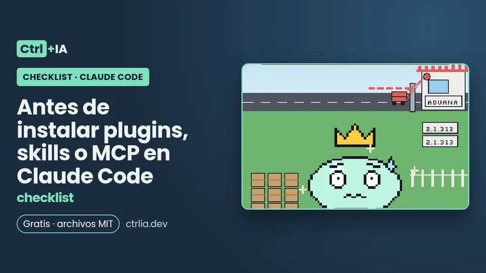
Checklist · Intermedio · 10 min
Qué comprobar antes de instalar una extensión, un plugin, una skill o un servidor MCP en Claude Code: qué ejecuta, de dónde viene y cómo quitarlo.
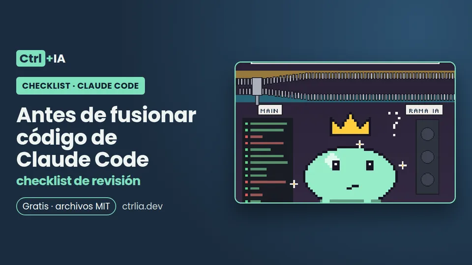
Checklist · Intermedio · 10 min
Ocho comprobaciones antes de fusionar código escrito por Claude Code: tests reales, secretos, dependencias, licencias, alcance, revisión y un script.
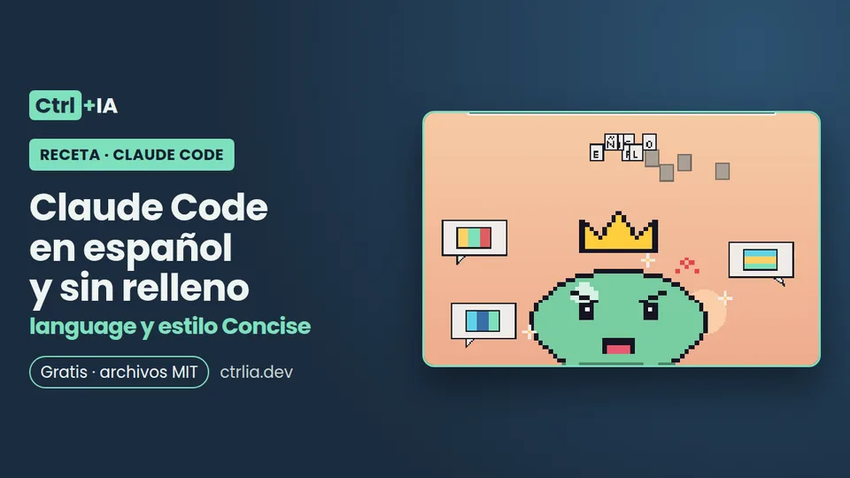
Receta · Básico · 10 min
Haz que Claude Code te responda siempre en español y sin paja: el ajuste language, el estilo Concise y una regla en CLAUDE.md contra la deriva al inglés.
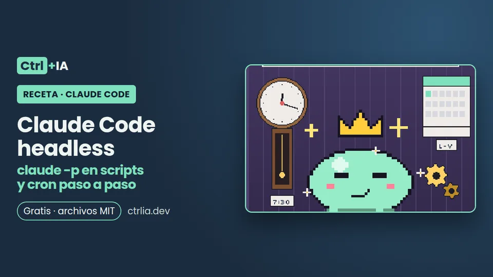
Receta · Intermedio · 15 min
Usa claude -p en un script de cron: resumen diario de commits con permisos mínimos, tope de turnos, salida JSON y login de la suscripción. Probado.
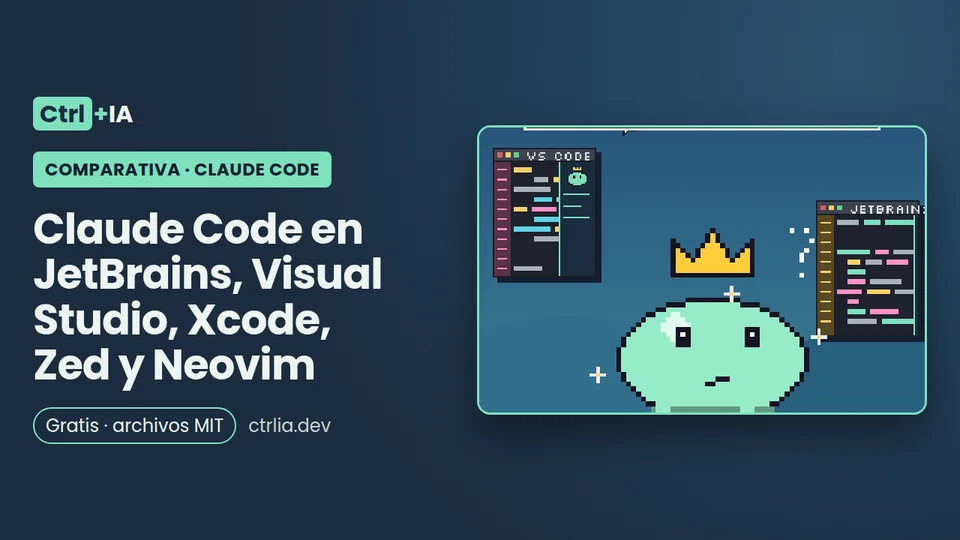
Comparativa · Básico · 8 min
Qué integración tiene Claude Code en JetBrains, Visual Studio 2022/2026, Xcode, Zed, Cursor y Neovim: quién la mantiene, cómo se instala y qué pierdes.
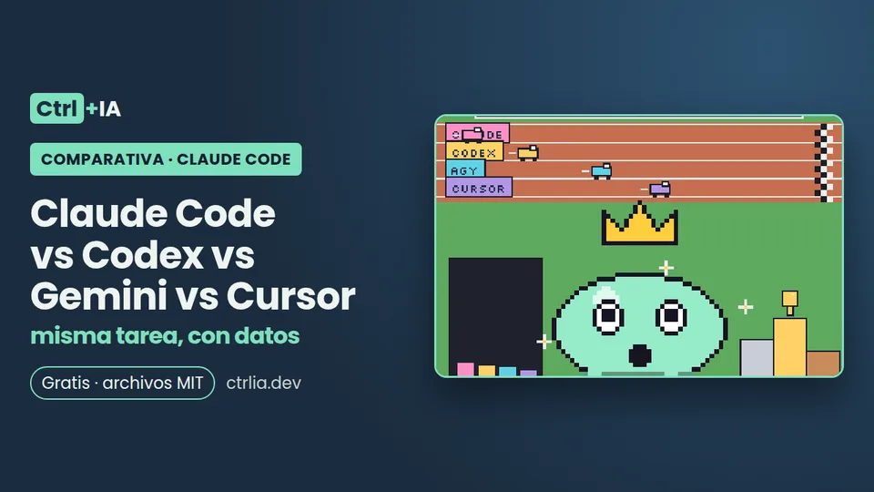
Comparativa · Intermedio · 20 min
Cómo comparar Claude Code, Codex CLI, Gemini o Antigravity CLI y Cursor CLI con la misma tarea, pruebas ocultas y 5 repeticiones. Metodología y scripts.
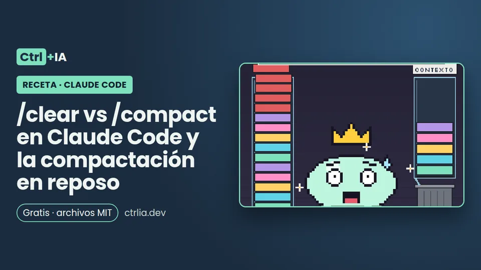
Receta · Intermedio · 10 min
Cuándo usar /clear o /compact en Claude Code, qué sobrevive a una compactación y cómo apagar la compactación en reposo con idleCompaction.
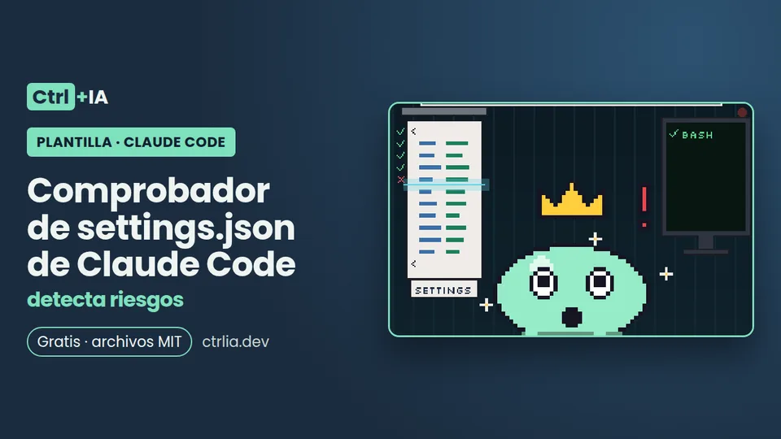
Plantilla · Intermedio · 5 min
Pega tu settings.json de Claude Code y ve cada riesgo de permisos con su nivel, la explicación en español y el enlace a la documentación oficial.
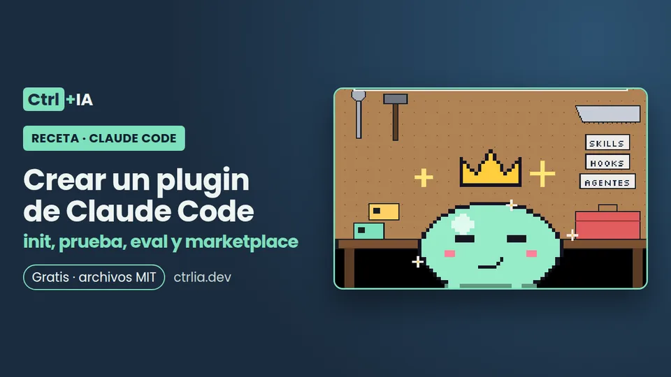
Receta · Intermedio · 20 min
Crea un plugin de Claude Code con plugin.json y una skill, valídalo, pruébalo con --plugin-dir, pásale un eval y publícalo en tu marketplace. Probado.
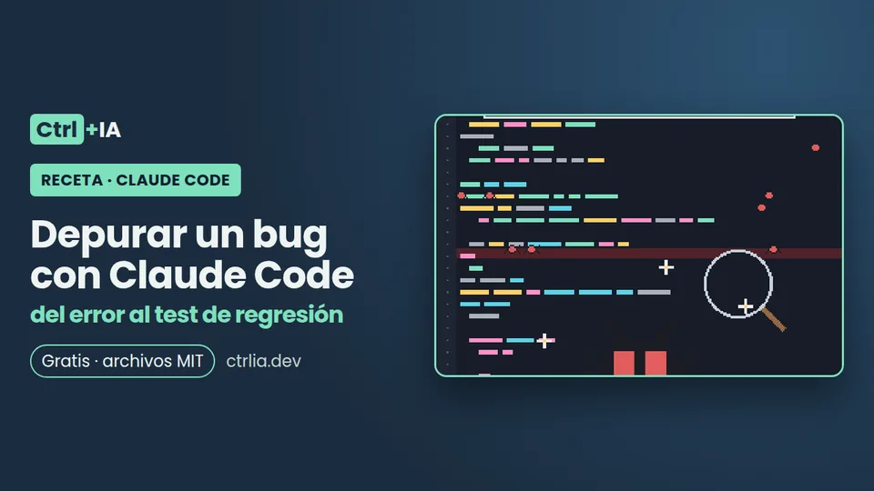
Receta · Intermedio · 15 min
Un flujo en seis pasos para depurar con Claude Code: reproducir, pasar la evidencia, hipótesis sin editar, test que falla primero y arreglo mínimo.

Checklist · Básico · 15 min
Los primeros 15 minutos con Claude Code en un proyecto: revisar la carpeta, modo y modelo, /init, permisos, /context y un primer encargo con evidencia.

Referencia · Básico · 10 min
Ruta de 10 pasos para aprender Claude Code en español: qué es, qué necesitas, instalarlo, tu primera tarea real y los cursos oficiales gratis explicados.
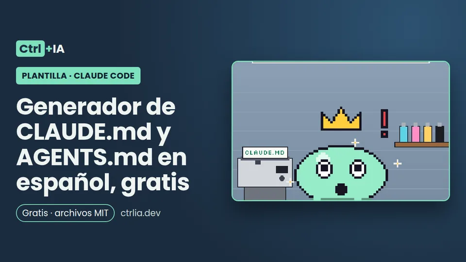
Plantilla · Básico · 5 min
Rellena un formulario y descarga un CLAUDE.md, un AGENTS.md o los dos, con avisos en vivo de reglas vagas, claves pegadas e imports mal escritos.
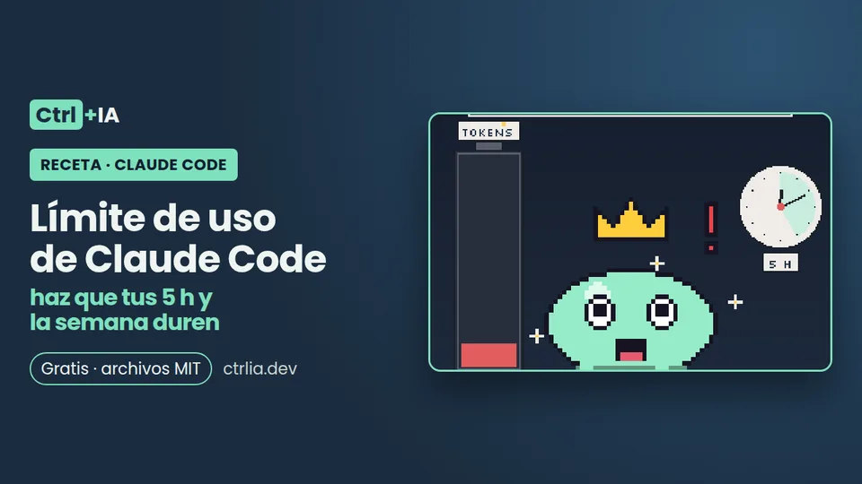
Receta · Intermedio · 10 min
Lee /usage y /context para ver qué se come tu límite de Claude Code y corrige cada causa: contexto, caché, subagentes, modelo y esfuerzo.
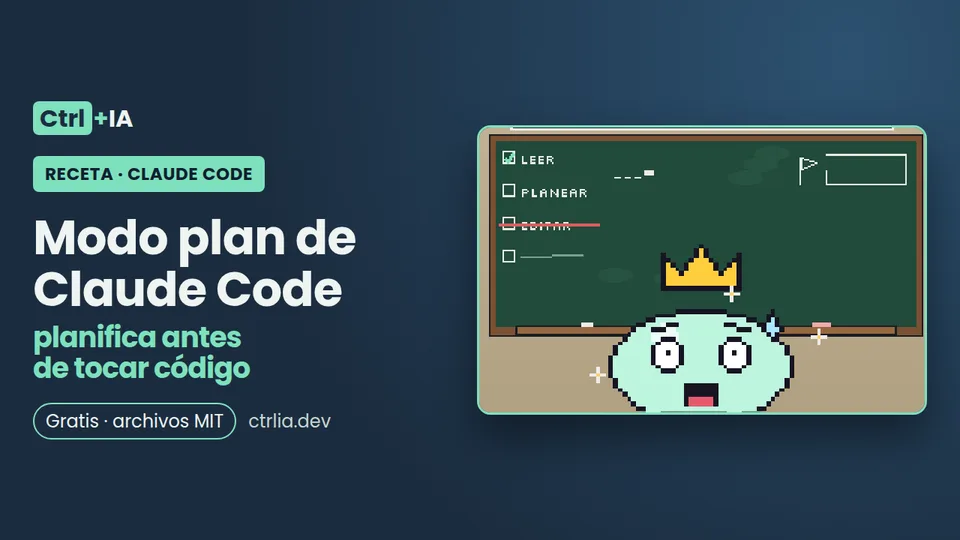
Receta · Básico · 10 min
Usa el modo plan de Claude Code: entra con Shift+Tab o /plan, edita el plan con Ctrl+G, guárdalo en tu repo y planifica con Opus usando opusplan.
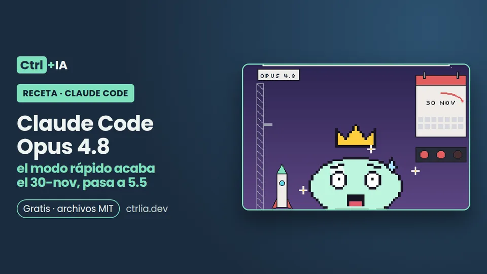
Receta · Básico · 5 min
El modo rápido de Opus 4.8 en Claude Code dará error desde el 30-nov-2026. Comprueba si te afecta y migra a Opus 5.5 en sesiones, ajustes y CI.
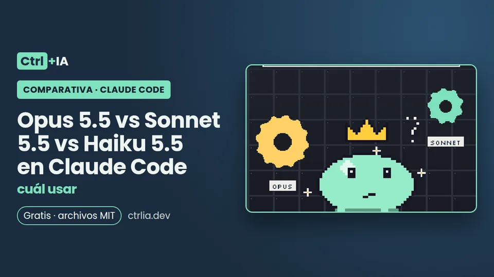
Comparativa · Intermedio · 10 min
Qué modelo y qué effort elegir en Claude Code 2.1.316, precios oficiales, opusplan y una prueba reproducible con tests ocultos (resultados pendientes).

Plantilla · Intermedio · 5 min
Cinco skills en español para Claude Code: commit, descripción de PR, arreglar tests, explicar código con Haiku y revisión antes del push.
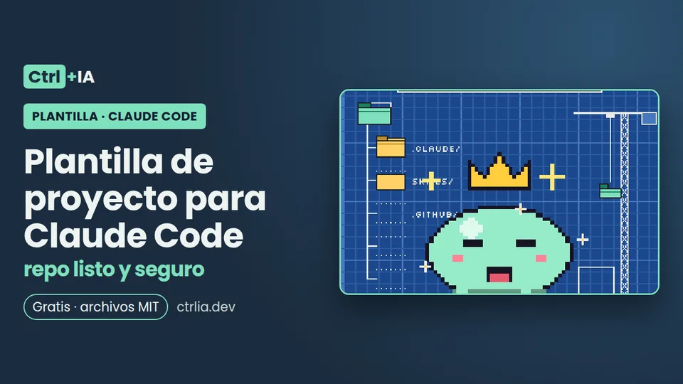
Plantilla · Intermedio · 15 min
Repo plantilla para Claude Code: CLAUDE.md corto, settings.json con allow, ask y deny, hooks de seguridad y de tests, dos skills, revisor y CI. Probado.
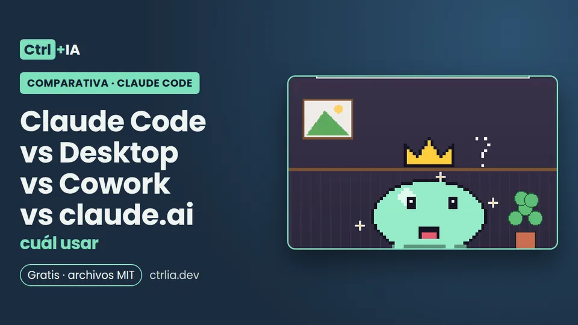
Comparativa · Básico · 8 min
Claude Code en la terminal, la app de escritorio, Cowork, el chat y Claude Code en la web: qué es cada uno, dónde corre, qué plan pide y cuál abrir.
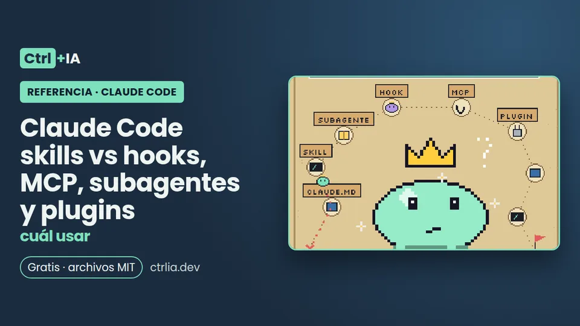
Referencia · Intermedio · 12 min
CLAUDE.md, skills, comandos, subagentes, hooks, MCP y plugins de Claude Code: para qué sirve cada uno, cuándo usarlo, dónde va y cuánto contexto gasta.
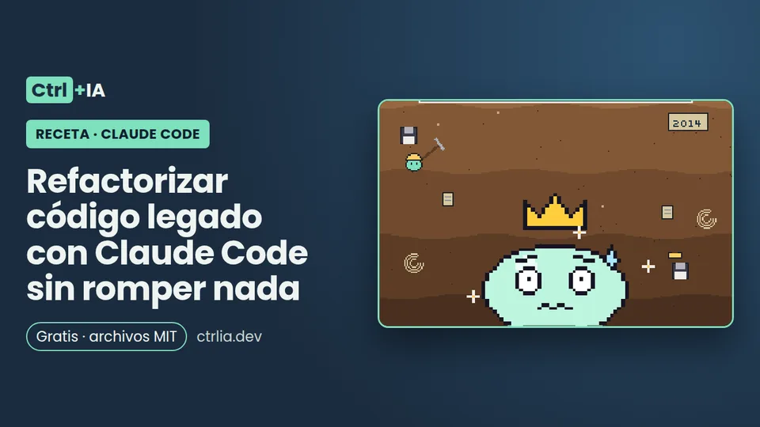
Receta · Intermedio · 20 min
Método en 5 pasos para refactorizar código heredado con Claude Code: modo plan, tests de caracterización, commits pequeños y qué deshace /rewind.
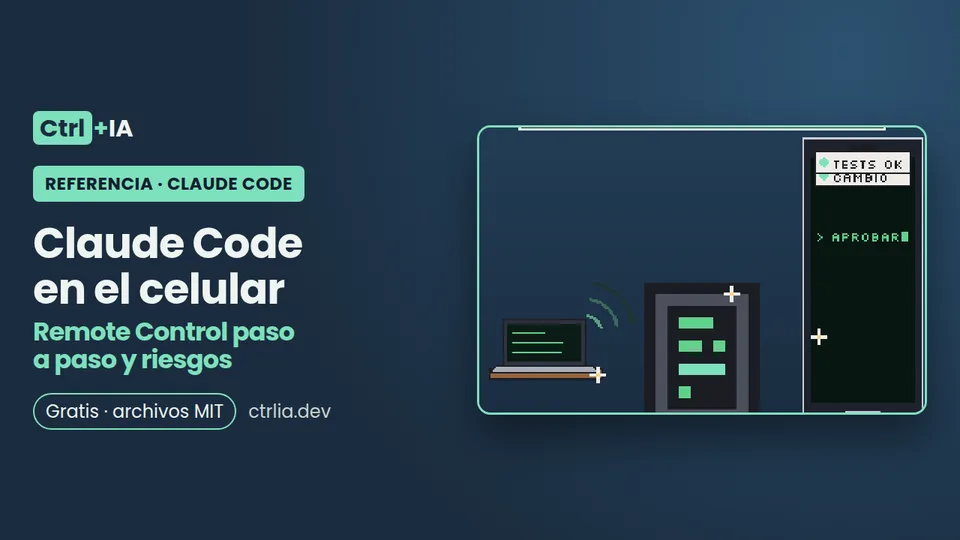
Referencia · Intermedio · 5 min
Usa Claude Code desde el móvil con Remote Control: requisitos, conexión con QR, qué funciona en la app, errores típicos y riesgos de privacidad.
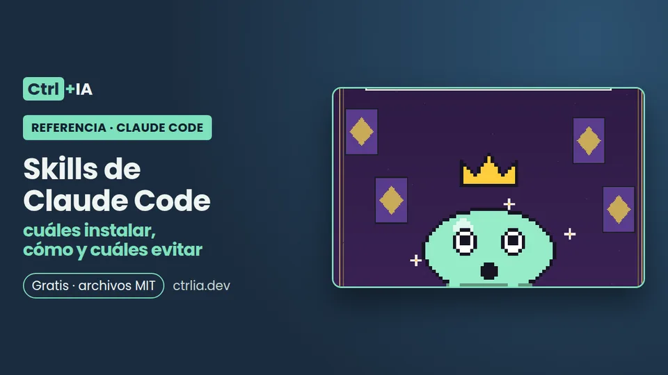
Referencia · Intermedio · 15 min
Qué skills y plugins de Claude Code instalar, con el comando exacto, su coste en tokens medido y un protocolo de seguridad de 4 pasos antes de confiar.
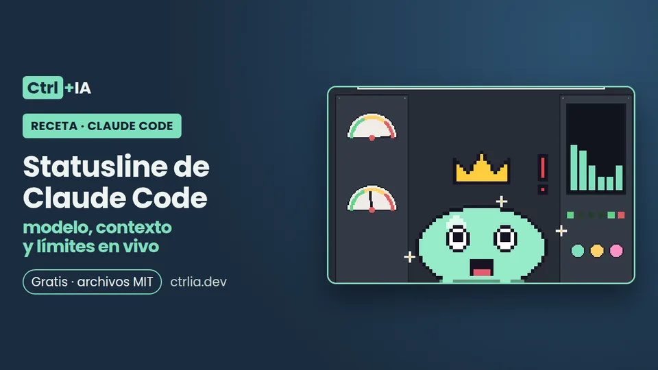
Receta · Básico · 10 min
Una barra de estado para Claude Code en Python sin dependencias: modelo, rama, contexto con color, límites de 5 h y 7 días y qué hacer si no aparece.
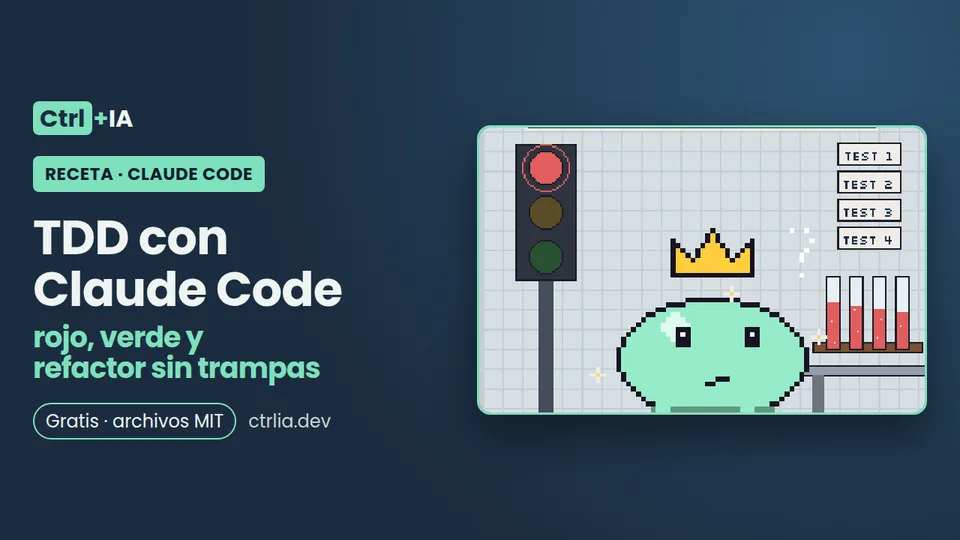
Receta · Intermedio · 15 min
Ciclo TDD con Claude Code: tests primero, código mínimo con los tests bloqueados por una regla de permisos y git para comprobar que no los tocó. Probado.
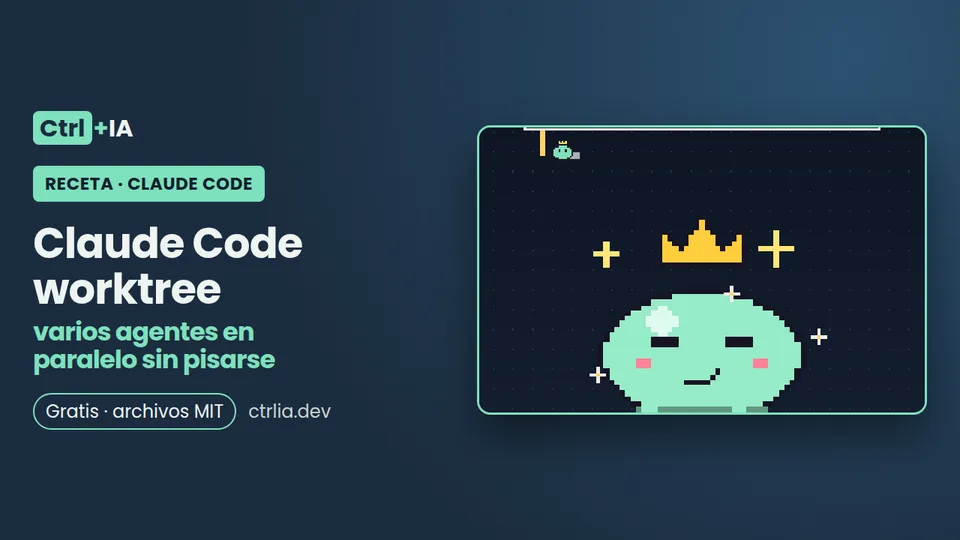
Receta · Intermedio · 15 min
Lanza varias sesiones de Claude Code en paralelo con claude --worktree, copia el .env con .worktreeinclude y limpia los worktrees sin perder trabajo.
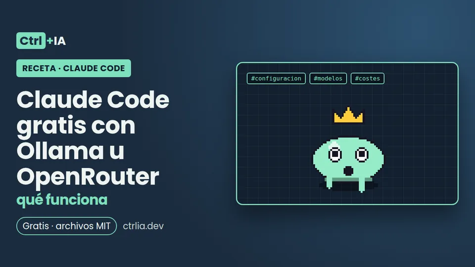
Receta · Intermedio · 15 min
Cómo conectar Claude Code a Ollama u OpenRouter con ANTHROPIC_BASE_URL, qué falla con modelos que no son Claude y la opción legal y barata.
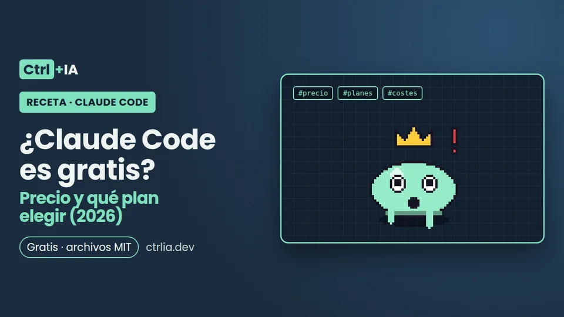
Receta · Básico · 5 min
Claude Code no es gratis: va incluido en Pro, Max y Ultra o se paga por tokens con la API. Precios oficiales, qué plan elegir y cómo gastar menos.

Receta · Básico · 10 min
Instala la extensión oficial de Claude Code en VS Code (anthropic.claude-code), compárala con la CLI en la terminal y úsala en Cursor sin riesgos.
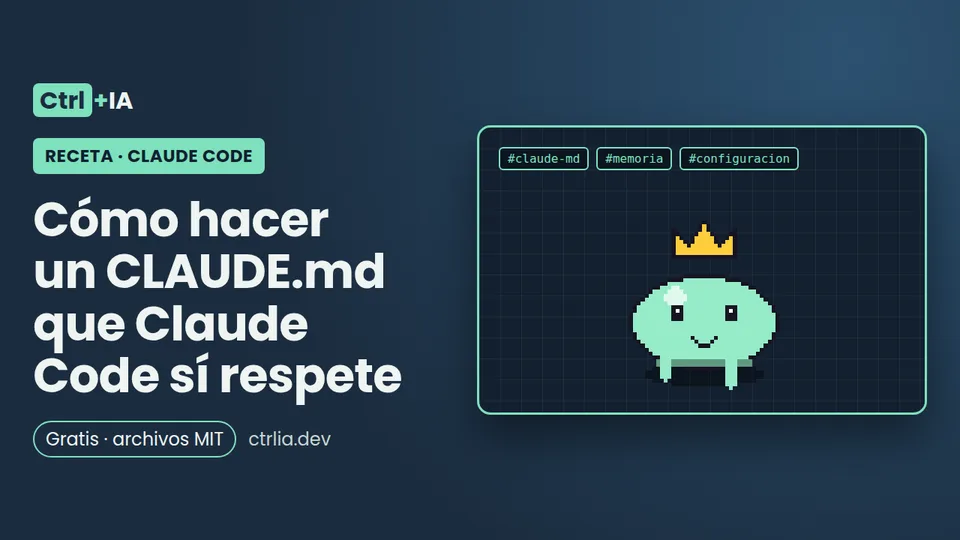
Receta · Básico · 15 min
Qué poner y qué no en CLAUDE.md, dónde va cada archivo, imports con @ruta, /init y /memory, y una plantilla probada para un proyecto web.
Receta · Básico · 5 min
El mensaje exacto, la causa y el arreglo de los errores más comunes de Claude Code: 529 Overloaded, 401, 403, límite de uso, contexto lleno, PATH y MCP.
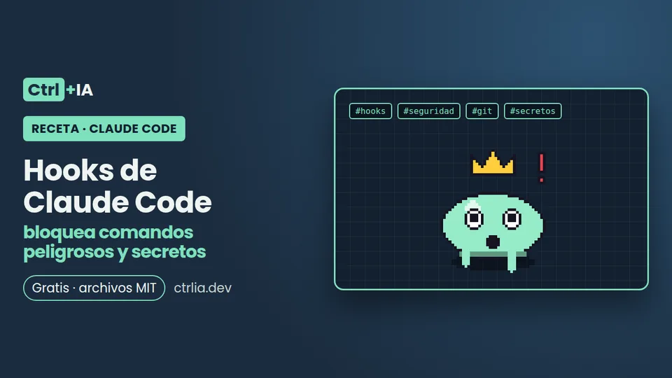
Receta · Intermedio · 10 min
Un hook PreToolUse en Python que impide a Claude Code leer tu .env, lanzar rm -rf peligrosos o hacer git push --force a main. Probado.
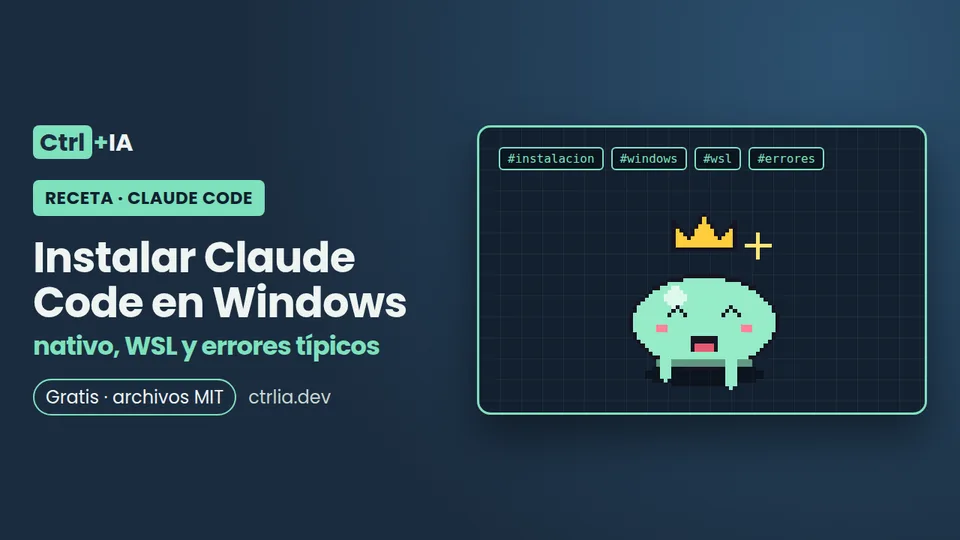
Receta · Básico · 10 min
Cómo instalar Claude Code en Windows 10 u 11 desde PowerShell, CMD o WSL, arreglar el PATH, iniciar sesión y resolver los errores más comunes.
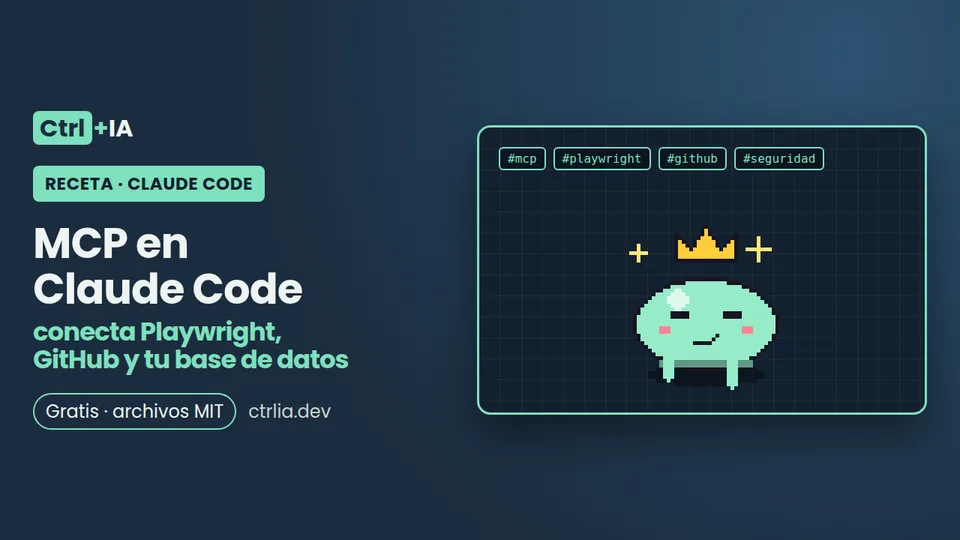
Receta · Intermedio · 15 min
Agrega servidores MCP a Claude Code con claude mcp add, compártelos en .mcp.json, controla permisos y contexto, y evita secretos e inyecciones.
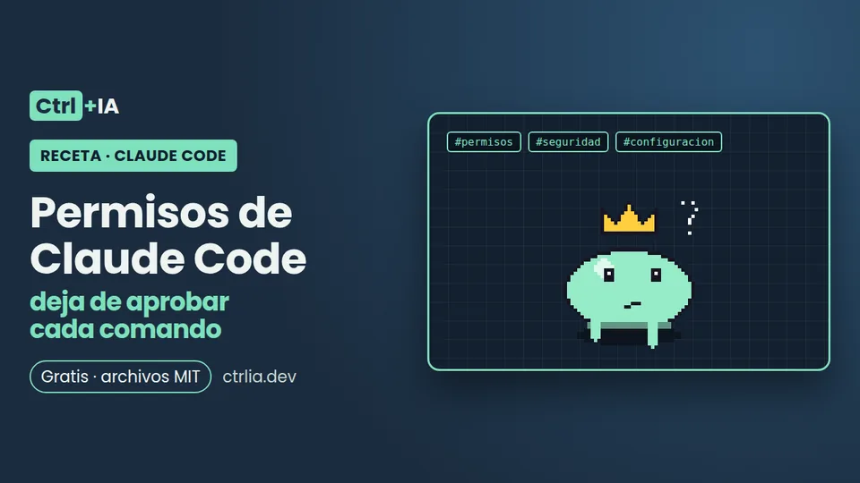
Receta · Intermedio · 10 min
Configura modos de permiso y reglas allow, ask y deny en settings.json para que Claude Code no te pregunte por todo, sin abrirle la puerta a lo peligroso.
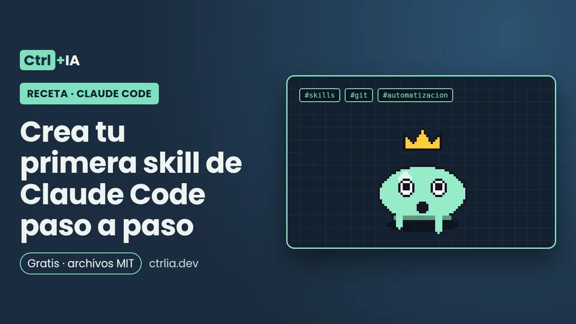
Receta · Básico · 10 min
Crea una skill de proyecto en .claude/skills con SKILL.md, un script de apoyo y una description que Claude reconoce. Ejemplo: notas de versión con git.
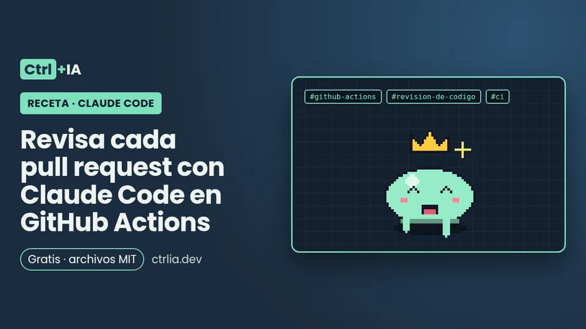
Receta · Intermedio · 15 min
Configura anthropics/claude-code-action@v1 para que revise tus PR solo, responda a @claude en comentarios y no dispare el gasto. Workflows listos.
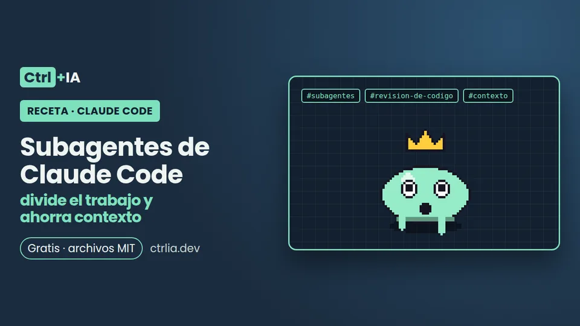
Receta · Intermedio · 10 min
Crea un subagente en .claude/agents/ con name, description, tools y model, y úsalo como revisor de solo lectura del diff antes de cada commit.
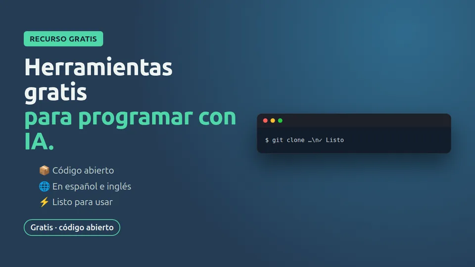
Novedad ·
Nuevo ajuste blockWritesOutsideWorkingDirectories: Write, Edit y NotebookEdit no tocan archivos fuera de tus carpetas de trabajo, en ningún modo.
Novedad ·
El 29 de octubre el marketplace de Cursor sirvió las versiones 2.1.312 y 2.1.313 de Claude Code con una puerta trasera SSH. Cómo saber si te afecta.